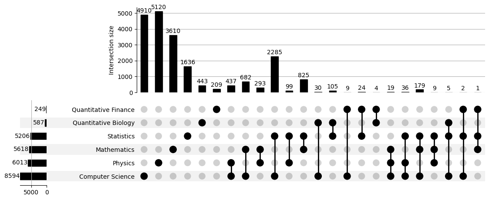
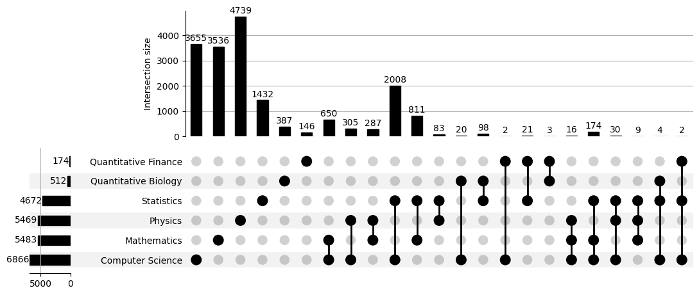
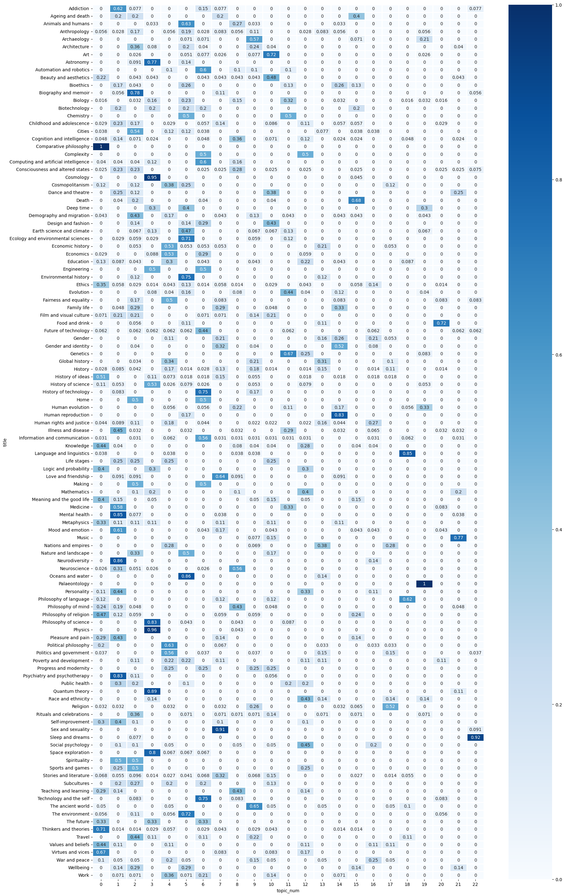

Topic Modelling Case Studies
How far can you push unsupervised topic modelling?
A topic modeller is an algorithm that can take a corpus of documents and identify topics in them by distinguishing clusters of ‘similar’ words. The word ‘similar’ has different connotations depending on the algorithm used. When the algorithm uses word embeddings, the word ‘similar’ implies semantic closeness in the embedding space. It is basically an unsupervised technique but has its supervised/guided versions that can hand-hold the process in challenging situations.
The unsupervised version is a great way to understand a large body of otherwise uncharacterized text, that saves time and is faster compared to other methods.
We are going to use a Python library – Top2Vec, that uses word embeddings for our Topic Modelling.
Case Study 1
About the dataset
The name of the dataset is ‘Topic Modelling for Research Articles’ from Kaggle. This labelled dataset contains research articles on different topics. The dataset contains 20972 articles with the Title and Abstract. The target label indicates the topics of the research papers. However, it is a multi-label target and shows papers belonging to one or more topics. This is a challenging scenario for topic modelling. But, how do we detect this topic overlap?
The role of the Upset plot in detecting topic overlap
An upset plot is used to detect overlapping sets just as a Venn diagram would. However, a Venn diagram gets messy if there are more than two or three overlapping sets. In such cases, an upset plot is much useful.
In our upset plot, each of the rows denote the topics. Some of the rows have independent dots that denote they are independent topics without overlap. The other dots show vertical connections with each other which means they are overlapping topics. The histograms above the independent dots denote the independent occurences, whereas, those above the connected dots denote the intersection of the sets of the connected topics. The numbers in the plot indicate the size of the set membership, including the independent occurences as well as their intersections, in this case the number of documents.
The histogram on the side shows the total occurences of a labelled topic.

Results of topic modelling
An upset plot over topic 0 shows that the model is unable to distinguish between the closely placed topics.
The upset plot for topic 0 is shown below:

- all major labelled topics are represented in considerable proportion robbing topic 0 of any distinctiveness.
- the problem of overlapping topics has not been handled.
Refer to this case study here.
Case Study 2
About the dataset
The dataset – Aeon Essays Dataset is sourced from Kaggle. The dataset contains about 2000+ essays on various topics. There are 114 labelled topics for those essays and no visible indications of topic overlap. We have to topic- model this dataset and evaluate the modelling.
Using a heatmap to detect topics in the dataset
Since there is no topic overlap, we will evaluate our modelling using heatmapped crosstabs. This will give us the option of examining how a labelled topic is distributed across the modelled topics (row normalization). Alternatively, it can also tell us how a particular modelled topic has aggregated the labelled topics (column normalization).
Our topic modeller has a hyperparameter called topic_merge_delta which can
be set at different thresholds. There is no correct guess for this parameter.
Hence, we will try experimenting with some values.
We try drawing heatmaps for three different threshold values 0.22,0.11 and 0.06. Our topic modeller identifies 21 topics in the corpus which has 114 labelled topics. Here, we present the heatmap for 0.11.
Results of topic modelling

We have done row normalization for the heatmap.
The heatmaps show some dark regions indicating affinity of the labelled topic
with particular modelled topic number(s). For instance, Paleontology is
captured perfectly in topic 19 and Comparative philosophy in topic 0. On
the other hand Human rights and justice is distributed thinly across various
modelled topics.
Taking the vertical view along columns, certain labelled topics such as Physics,
Cosmology, Space exploration, Quantum theory and Engineering have been
put under one topic indicating mutual affinity of these topics.
In fact, examining the dark regions along any particular column, indicates the
labelled topics with close affinities that have been aggregated under that
particular modelled topic. For instance, Philosophy of science,Physics,
Quantum theory and Space exploration are all modelled under topic 4.
Although, fractions of multiple labelled topics are assigned to the same modelled topic number, this is not to be confused with topic overlap. This is because, each document has one and only one assigned label from either of the label spaces – the human label space and the modelled label space. This means, every document is allocated to one and only one cell in the heatmap.
Refer to this case study here.
Takeaway
Unsupervised topic modelling is challenging especially for corpora with closely related multiple themes and doubly so when there is topic overlap. We have had the luxury of labelled data for both the case studies; this may not be true in many scenarios. A corpus with cohesively written documents, as in the second case study, can benefit more from unsupervised topic modelling.
Unsupervised topic modelling can at best produce some clarity
when there is none to start with.
However, it can never match human labelling performance
because it lacks the training of a human labeller.